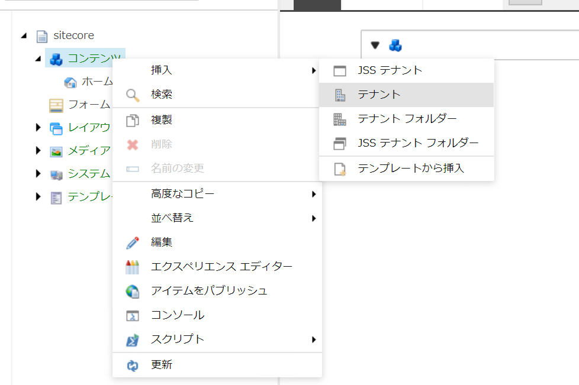
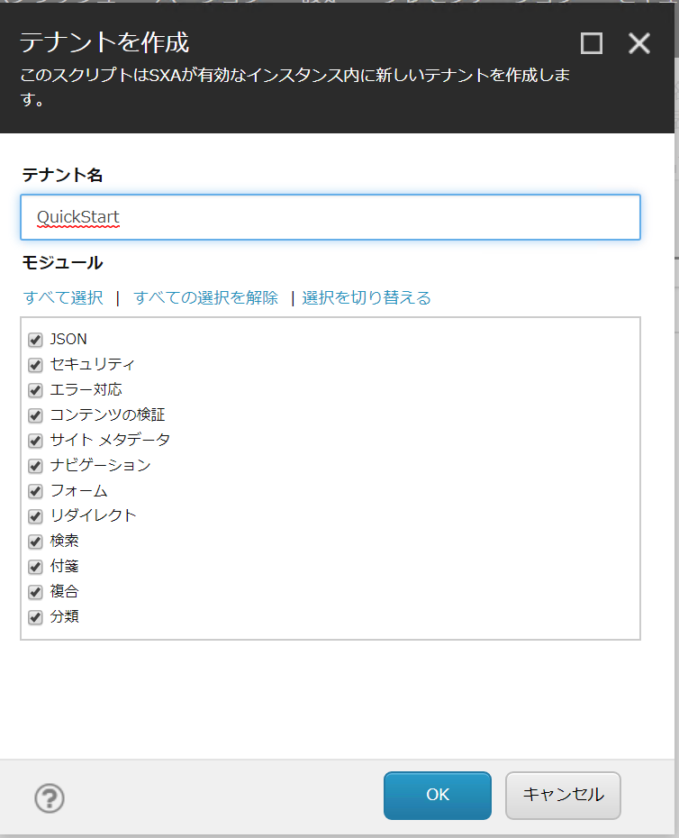
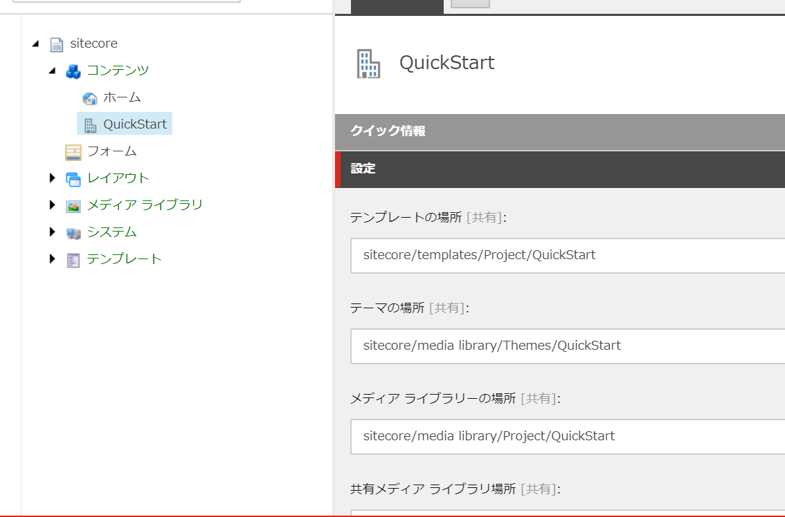
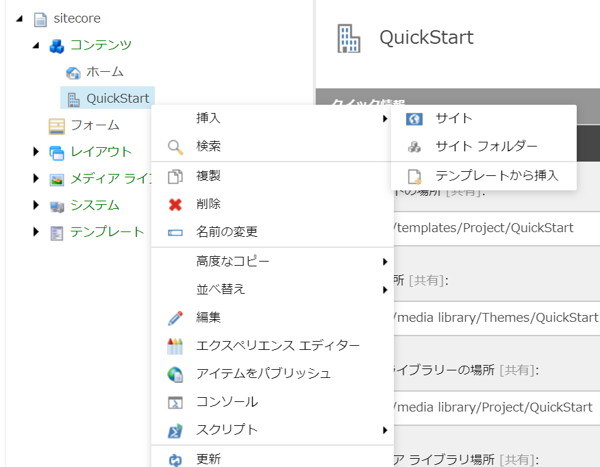
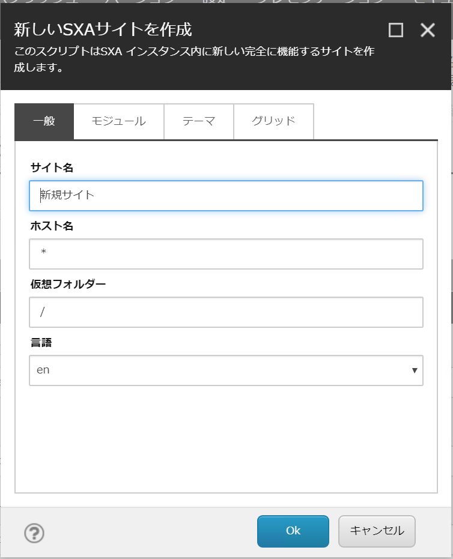
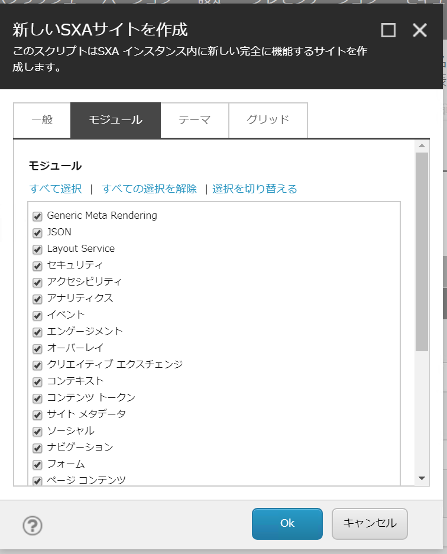
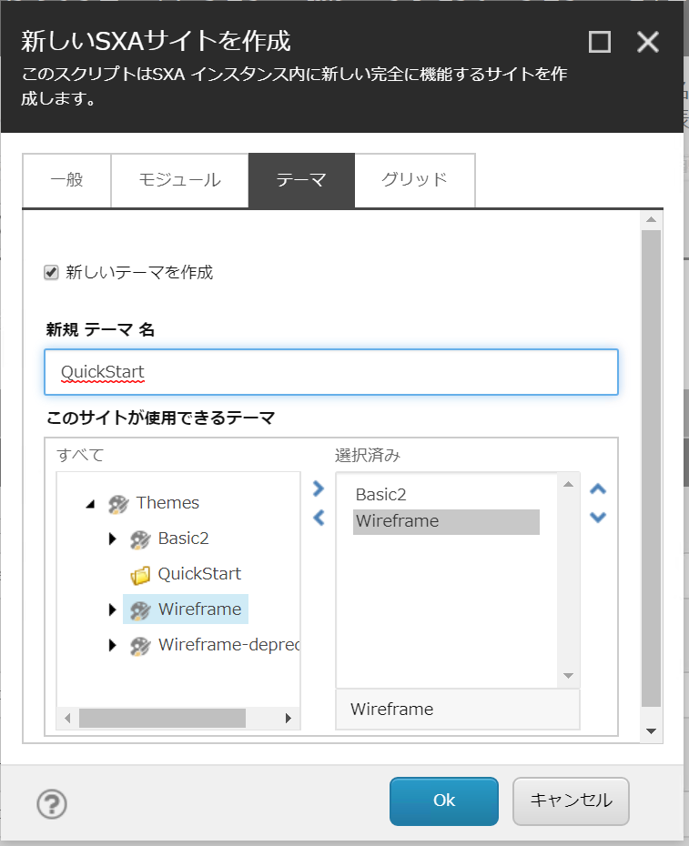
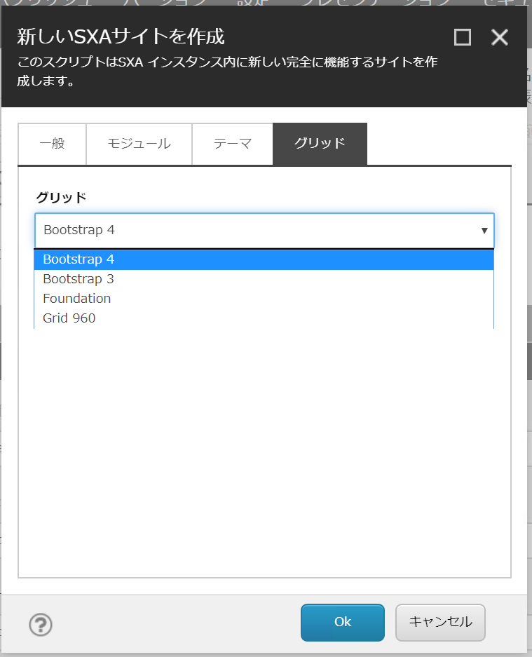
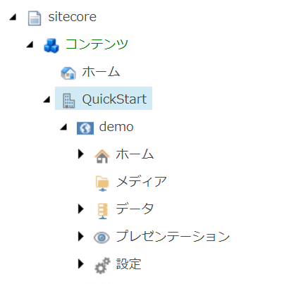

1.1. テナントの作成、サイトの作成¶
Sitecore は複数の Web サイトを管理することができる仕組みとなっています。この際、サイト間で情報共有をしたい場合は、同じテナントの下に Web サイトを作成することで簡単に共有することができます。
ここではテナントの作成方法について、紹介をします。
1.1.1. テナントの作成¶
ログインをしたあと、コンテンツエディターを立ち上げてください。コンテンツエディターを立ち上げたあとアイテムとして Sitecore - コンテンツ が表示されているので、ここで右クリックをするとメニューが出てきます。メニューの項目から「挿入」を選択すると下のように挿入することができるアイテムとして「テナント」が表示されます。
{kind=link}
実行をすると、テナントを作成するにあたって必要となる設定項目が表示されます。ここではテナント名を QuickStart と設定します。モジュールに関しては今回はすべて選択します。
{kind=link}
完了すると、テナントのアイテムが作成されます。このテナントで利用するtンプレート、テーマ、メディアライブラリの場所などがアイテムで定義されています。
{kind=link}
これでテナントは完成しました。
1.1.2. サイトの作成¶
テナントの下にはサイトを構築することができます。今回は、作成をしたテナントを右クリックをしてサイトを追加するメニューを表示します。
{kind=link}
暫くすると以下のようなダイアログが表示されます。
{kind=link}
今回は以下のように設定していきます。
設定項目 |
値 |
|---|---|
サイト名 |
demo |
ホスト名 |
|
仮想フォルダー |
/ |
言語 |
ja-jp |
設定をすると、以下のようになります。
{kind=link}
続いてタブを切り替えて設定を追加していきます。モジュールはすべてのモジュールを選択しておきます。
{kind=link}
次にテーマのタブに切り替えます。ここでは、「新しいテーマを作成」のチェックボックスをチェック、またテーマとして「Basic2」と「Wireframe」を選択します。
{kind=link}
最後にグリッドの設定ですが、標準で設定できる Bootstrap 4 を選択します。
{kind=link}
上記の設定を確認しあと、OK ボタンを押すとサイトに必要な情報の入ったサイトが出来上がります。
これで、空っぽの Web サイトが出来上がりました。